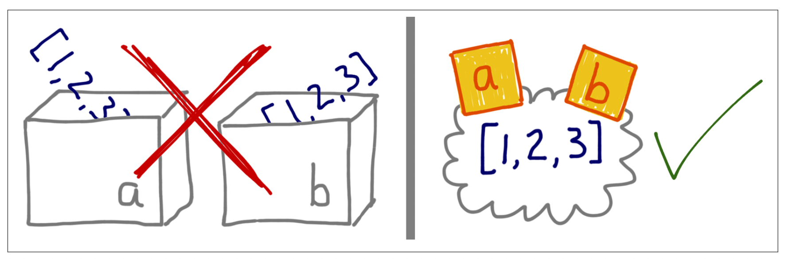
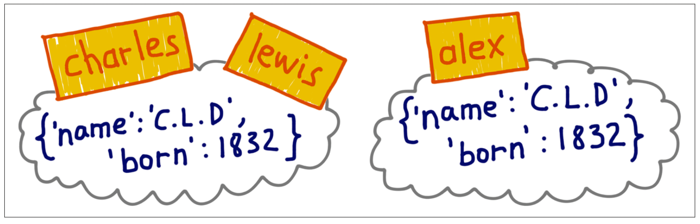

a = [1, 2, 3]
a.append(4)
print(a)[1, 2, 3, 4]Consider the mutable Objects we have been working with in this course: Lists, Tuples, Dictionaries, DataFrames, and Series. In our style of writing code, we have been modifying our data structures as we go, like this:
a = [1, 2, 3]
a.append(4)
print(a)[1, 2, 3, 4]However, consider the following pattern in which we assign b to a and then perform the append method on b.
a = [1, 2, 3]
b = a
b.append(4)
print(b)[1, 2, 3, 4]Let’s look at a also:
print(a)[1, 2, 3, 4]Strange, a was modified also! What’s going on?
When we created the variable a to equal the list [1, 2, 3], it is tempting to say, “the variable ‘a’ is a list with value [1, 2, 3]”, but that is technically incorrect!
The correct way: “the variable ‘a’ is a reference to a list with value [1, 2, 3]”.
We now make a distinction between the variable and the object: the variable tells us where the object is stored in the working memory of the computer; the variable gives the reference information to the object, and other variables can reference the same object also! When we evaluated b = a, we told b to reference thee same object as a, so modifying b modified a also.
Let’s see this in action:
If it doesn’t load properly, here is the link.
What is happening behind the scenes:
a = [1, 2, 3]
a holds the reference to that memory address, 999.b = a
b has the same memory address as a, 999.b.append(4)
print(a), print(b)
a and b have the same address and will access the same object.We can look at the memory address of our variables via the id() function:
id(a), id(b)(140715379664256, 140715379664256)They are the same.
Here is another visual way to think about this:
If you imagine variables are like boxes, you can’t make sense of assignment in Python; instead, think of variables as sticky notes. Image source: Fluent Python, Chapter 8.
Let’s see another example, using Dictionaries this time:
charles = {'name': 'Charles L. Dodgson', 'born': 1832}
lewis = charles
id(charles), id(lewis)(140715379076480, 140715379076480)lewis['balance'] = 950
charles{'name': 'Charles L. Dodgson', 'born': 1832, 'balance': 950}As expected, we see that Charles also has a balance of 950, because both variables have the same reference to the same object.
Now, suppose we create a variable alex with a reference to a dictionary with the same value:
alex = {'name': 'Charles L. Dodgson', 'born': 1832, 'balance': 950}What do we expect?
id(lewis), id(charles), id(alex)(140715379076480, 140715379076480, 140715075215552)This shows that you can have objects of the same values, that is:
lewis == alexTruebut they are distinct objects that are stored in a different part of the memory. Therefore you can modify alex, but lewis and charles won’t be changed.
Let’s see this step-by-step:
If it doesn’t load properly, here is the link.
Here’s another illustration of the situation:

If it doesn’t load properly, here is the link.
We see a similar pattern for Dataframes
import pandas as pd
import numpy as np
simple_df = pd.DataFrame(data={'id': ["AAA", "BBB", "CCC", "DDD", "EEE"],
'case_control': ["case", "case", "control", "control", "control"],
'measurement1': [2.5, 3.5, 9, .1, 2.2],
'measurement2': [0, 0, .5, .24, .003],
'measurement3': [80, 2, 1, 1, 2]})analysis_df = simple_df
analysis_df.measurement1 = np.log(analysis_df.measurement1)
print(analysis_df) id case_control measurement1 measurement2 measurement3
0 AAA case 0.916291 0.000 80
1 BBB case 1.252763 0.000 2
2 CCC control 2.197225 0.500 1
3 DDD control -2.302585 0.240 1
4 EEE control 0.788457 0.003 2print(simple_df) id case_control measurement1 measurement2 measurement3
0 AAA case 0.916291 0.000 80
1 BBB case 1.252763 0.000 2
2 CCC control 2.197225 0.500 1
3 DDD control -2.302585 0.240 1
4 EEE control 0.788457 0.003 2“Counter example”: when we subset via .loc, it returns a copy?
case_df = simple_df.loc[simple_df.case_control == "case"]
case_df.loc[:, 'measurement1'] = 5
print(case_df) id case_control measurement1 measurement2 measurement3
0 AAA case 5 0.0 80
1 BBB case 5 0.0 2/var/folders/wj/rvkd71890qvcyjn3ty3k1mbm0000gn/T/ipykernel_37588/3282495388.py:2: SettingWithCopyWarning:
A value is trying to be set on a copy of a slice from a DataFrame.
Try using .loc[row_indexer,col_indexer] = value instead
See the caveats in the documentation: https://pandas.pydata.org/pandas-docs/stable/user_guide/indexing.html#returning-a-view-versus-a-copy
print(simple_df) id case_control measurement1 measurement2 measurement3
0 AAA case 0.916291 0.000 80
1 BBB case 1.252763 0.000 2
2 CCC control 2.197225 0.500 1
3 DDD control -2.302585 0.240 1
4 EEE control 0.788457 0.003 2print(simple_df) id case_control measurement1 measurement2 measurement3
0 AAA case 0.916291 0.000 80
1 BBB case 1.252763 0.000 2
2 CCC control 2.197225 0.500 1
3 DDD control -2.302585 0.240 1
4 EEE control 0.788457 0.003 2data = pd.DataFrame(np.arange(16).reshape((4, 4)),index=["Ohio", "Colorado", "Utah", "New York"], columns=["one", "two", "three", "four"])
data| one | two | three | four | |
|---|---|---|---|---|
| Ohio | 0 | 1 | 2 | 3 |
| Colorado | 4 | 5 | 6 | 7 |
| Utah | 8 | 9 | 10 | 11 |
| New York | 12 | 13 | 14 | 15 |
data.loc[:, "one"] = 1https://pandas.pydata.org/pandas-docs/stable/user_guide/copy_on_write.html